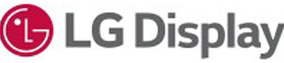
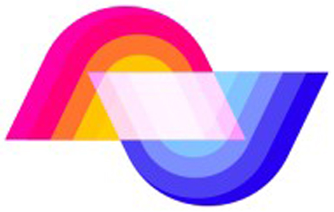
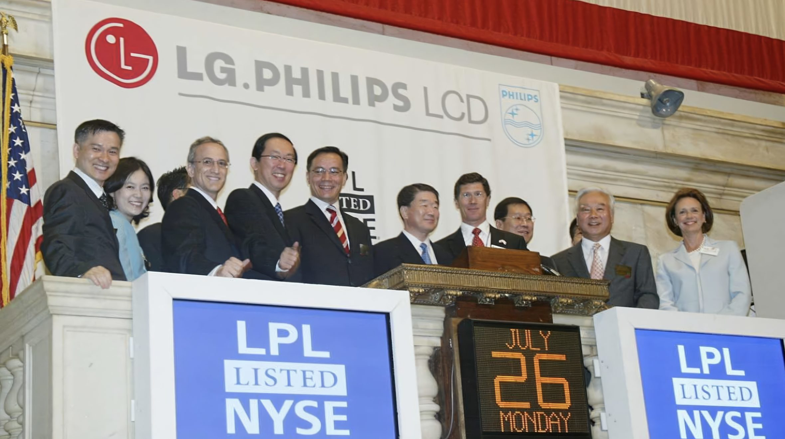

LG Display
NYSE: LPL
A career spent turning hard technology into markets — displays, sensors, microLED, solar and MedTech. Former EVP & CMO, LG Display.


Bruce Berkoff has held CEO, CMO, CRO and CSO roles across the technology industry — from capital equipment to displays, sensors to microLED, solar and GreenTech to MedTech. He was EVP & CMO at LG Display, and later a member of its board; CMO/CSO for the EDS division at Applied Materials; and acting CRO at Nanosys.
His work is the commercial layer on top of deep science: strategic road mapping, pricing, go-to-market execution and monetization, with extensive experience in IPOs, M&A and joint ventures.
He currently chairs the LCD TV Association, advises and mentors at Berkeley SkyDeck, and works with startups and large companies on electronic materials, strategy, GTM and pricing. His present focus is saving lives and money through new sensor and MedTech approaches — advanced materials paired with AI/ML analysis.
He holds degrees from Princeton and UC Berkeley in physics and biophysics, has lived in three countries and six states, and works best at the intersection between disciplines and cultures.

Most recent first. The roles that defined the career are set larger.
LG.Philips LCD at the time. Public board seat (NYSE: LPL) followed the operating role.
Most useful on go-to-market strategy, pricing, partnerships and competitive positioning in deep technology. Direct contact is fastest.